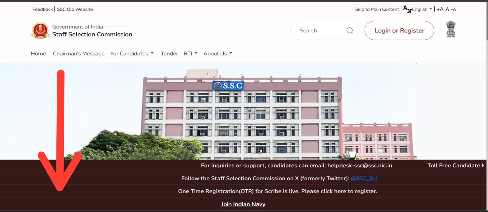
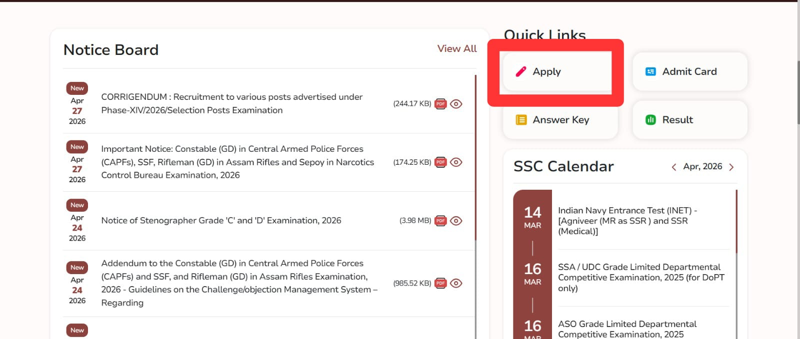
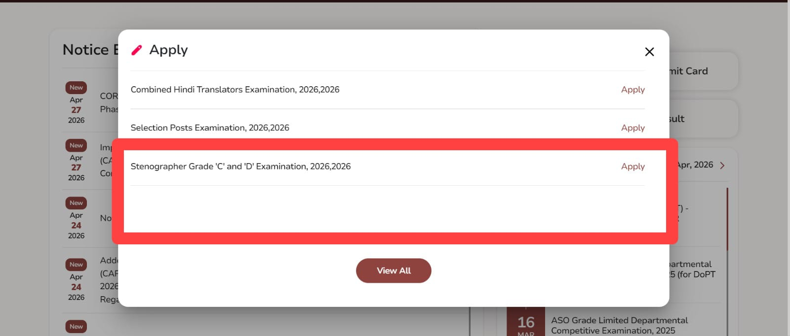

If you have been searching for SSC CGL Recruitment 2026, SSC CGL notification 2026, or a straightforward guide on SSC CGL apply online, you are in the right place. The SSC Combined Graduate Level Examination 2026 is one of the biggest central government recruitments of the year, and with 12,256 vacancies on the table, it deserves your full attention right now.
Most people approach SSC CGL with either too much confidence or too much confusion. The exam has a well-defined structure, a predictable syllabus, and a clear selection process — but it also has intense competition. The candidates who clear it are not necessarily the smartest in the room; they are the ones who understood the pattern early, prepared consistently, and avoided preventable mistakes during both the application and the exam itself.
This guide covers everything you need: vacancy count, important dates, who can apply, how to apply, what the exam looks like at each tier, which posts pay the most, how to prepare smartly, and what commonly goes wrong. If you are serious about SSC CGL 2026, read this from start to finish and keep it handy when you sit down to fill the form.
Table of Contents
- SSC CGL 2026: Quick Highlights
- Why SSC CGL Is Different From Other Government Exams
- Important Dates You Cannot Afford to Miss
- Total Vacancies and Post Categories
- Popular SSC CGL Posts and Their Work Profiles
- Eligibility: Education, Age, and Nationality
- How to Apply Online Step by Step
- Application Fee and Correction Window
- Selection Process: Tier 1 and Tier 2
- Tier 1 Exam Pattern in Detail
- Tier 2 Exam Pattern in Detail
- Syllabus and Preparation Strategy
- Salary, Pay Level, and Career Scope
- Common Mistakes to Avoid
- Final Checklist Before You Apply
- Apply Process
- Also Read
- FAQs
SSC CGL 2026: Quick Highlights
| Exam Name | SSC Combined Graduate Level Examination 2026 (SSC CGL 2026) |
| Conducting Body | Staff Selection Commission (SSC) |
| Post Category | Group B and Group C (Gazetted and Non-Gazetted) |
| Total Vacancies | 12,256 |
| Educational Qualification | Bachelor's Degree from a recognised university |
| Application Mode | Online only |
| Last Date to Apply | 22nd June 2026 |
| Salary Range | ₹25,500 to ₹1,51,100 per month |
| Selection Process | Tier 1 (CBT) + Tier 2 (CBT) |
| Official Website | ssc.gov.in |
Why SSC CGL Is Different From Other Government Exams
SSC CGL is not just another exam on a list. It is one of the few central government recruitments that gives a graduate-level candidate access to a wide range of ministries, departments, and pay levels through a single application. You do not apply for one specific post — you apply for the exam, and based on your score, preference, and category, you get allocated to a post.
That is what makes the planning around SSC CGL unique. You should understand which posts you are eligible for, which ones align with your preferences, and which ranks you need to aim for in Tier 2 to land your preferred department. A candidate who knows what they are targeting scores with more focus than someone who just prepares to clear the exam without thinking about the end goal.
Another thing that separates SSC CGL from many exams is the sheer volume of competition. Millions of candidates appear every year, and the actual difficulty of the exam is not just in the questions — it is in performing better than everyone else under time pressure. That requires a strategy, not just studying the syllabus.
Important Dates You Cannot Afford to Miss
SSC CGL 2026 has a tight application window. Missing any key date can mean waiting another full year. Keep these dates fixed in your schedule:
- Notification release date: May 2026
- Online application start date: May 2026
- Last date to apply online: 22nd June 2026
- Last date for fee payment: 22nd June 2026
- Correction window: To be notified by SSC
- Tier 1 tentative exam date: September–October 2026 (tentative)
- Tier 2 tentative exam date: December 2026 – January 2027 (tentative)
Always cross-check these dates on the official SSC website because SSC occasionally revises schedules. Do not rely on unofficial sources or social media for final confirmation of dates. The official notification is the only document that counts.
Total Vacancies and Post Categories
The SSC CGL 2026 notification mentions a total of 12,256 vacancies spread across Group B and Group C posts. These vacancies are distributed across central government ministries, departments, and offices. The category-wise and post-wise breakup is published in the official SSC notification, and the final numbers can vary slightly before the exam based on departmental requirements.
The posts broadly fall into two categories. Group B posts are Gazetted and carry higher pay levels, responsibilities, and career growth. Group C posts are Non-Gazetted and are strong entry-level government positions with solid stability and gradual promotion tracks. Both categories together represent a wide range of career possibilities.
Popular SSC CGL Posts and Their Work Profiles
One of the most important decisions for a CGL aspirant is understanding which posts matter most for their career goals. Here is a quick overview of some high-demand SSC CGL posts:
| Post | Department | Pay Level |
| Assistant Section Officer (ASO) | Ministry of External Affairs, Intelligence Bureau | Level 7 (₹44,900–1,42,400) |
| Inspector (IT / Central Excise) | CBIC | Level 7 (₹44,900–1,42,400) |
| Sub Inspector | CBI, NIA | Level 6 (₹35,400–1,12,400) |
| Junior Statistical Officer (JSO) | Ministry of Statistics | Level 6 (₹35,400–1,12,400) |
| Auditor | CAG, CGDA, CGA | Level 5 (₹29,200–92,300) |
| Tax Assistant | CBIC, CBDT | Level 4 (₹25,500–81,100) |
| Upper Division Clerk (UDC) | Central Government Offices | Level 4 (₹25,500–81,100) |
ASO in MEA and Inspector in CBIC are consistently the most sought-after posts because they offer a strong pay level, central government exposure, and meaningful departmental growth over time. JSO is preferred by candidates with a Math or Statistics background because it comes with a slightly different selection process through Paper 2 in Tier 2.
Eligibility: Education, Age, and Nationality
Before you start the application form, verify your eligibility completely. There are three pillars: education, age, and nationality.
Educational Qualification
The minimum educational requirement for most SSC CGL posts is a Bachelor's degree from a recognized university in any discipline. However, some specific posts have additional requirements:
- Statistical Investigator Grade II and JSO: Bachelor's degree with Statistics as one of the subjects, or a degree in Mathematics/Statistics.
- Assistant Audit Officer / Assistant Accounts Officer: CA, CS, MBA, or similar qualifications may be preferred in some cases — check the notification carefully.
- Compiler: Bachelor's degree in Economics or Statistics or Mathematics from a recognized university.
If you are in your final year of graduation when the notification is released, check whether the SSC allows final-year students to apply. Typically, candidates must have completed their degree before the date of document verification.
Age Limit
The age limit is calculated based on a reference date mentioned in the official notification. Generally for SSC CGL 2026:
- Minimum age: 18 years
- Maximum age: 27 to 32 years, depending on the post
- Most posts: 18 to 32 years for the UR category
Age relaxation applies as follows: SC/ST candidates get 5 years relaxation, OBC candidates get 3 years relaxation, PwD candidates get 10 years (UR), 13 years (OBC), and 15 years (SC/ST), and Ex-servicemen get relaxation as per government norms. Always verify the exact relaxation from the official notification, as some posts have different age bands.
Nationality
Candidates must be Indian citizens. Subjects of Nepal or Bhutan, persons of Indian origin migrated from specified countries with the intent to settle permanently in India, and Tibetan refugees who came to India before January 1, 1962, may also be eligible with proper certification. In practice, your identity documents and birth certificate should be clean and consistent with all application details.
How to Apply Online Step by Step
The SSC CGL 2026 application process is entirely online through the SSC official website. Here is the sequence to follow without errors:
- Go to the official SSC website at ssc.gov.in.
- Register as a new user if you do not have an SSC account. Provide your name, date of birth, mobile number, and email ID exactly as they appear on your Aadhaar or 10th certificate.
- Save your registration number and password securely.
- Log in using your registration number, date of birth, and password.
- Open the SSC CGL 2026 application link from the notice board or apply section.
- Fill in all personal, academic, and contact details carefully. Double-check every field before moving to the next section.
- Upload your recent passport-size photograph and signature in the specified file format and size. Blurry or incorrectly formatted images are a common reason for rejection.
- Select your post preferences and exam centre choices.
- Preview the full application before submitting. Look for typos, mismatched names, and wrong category selection.
- Pay the application fee using net banking, debit card, credit card, or UPI.
- Submit and download the confirmation page immediately. Take a screenshot and store it in a secure location for future reference.
The golden rule here is simple: apply early. Do not wait until June 22. SSC's online portal sees a massive spike in traffic near deadlines, and minor technical delays during that period can leave you outside the window.
Application Fee and Correction Window
The application fee for SSC CGL 2026 is Rs. 100 for General and OBC candidates. SC, ST, PwD, and female candidates are exempted from the fee entirely. Fee exemption does not mean you can rush through the form — every detail still has to be accurate and match your official documents.
SSC usually provides a correction window for a limited period after the registration closes. Use it only if you have made a genuine mistake. Treat the correction window as a safety net, not a fallback for a careless first submission. Some fields, once submitted, may not be editable even during the correction period.
Selection Process: Tier 1 and Tier 2
SSC CGL 2026 follows a two-tier selection process:
- Tier 1: Computer-Based Test (CBT) — Screening round
- Tier 2: Computer-Based Test (CBT) — Merit-based round
Tier 1 determines who gets to sit for Tier 2. Tier 2 determines your final rank. The final merit list for each post is prepared based on your Tier 2 performance, and in case of a tie, Tier 1 marks are used to break it. That means both tiers are important, and you should not treat Tier 1 as just a hurdle to cross.
Tier 1 Exam Pattern in Detail
The Tier 1 exam is designed to test your baseline competency across four subjects. Here is the full breakdown:
| Subject | Questions | Marks | Time |
| General Intelligence and Reasoning | 25 | 50 | 60 minutes total |
| General Awareness | 25 | 50 | |
| Quantitative Aptitude | 25 | 50 | |
| English Comprehension | 25 | 50 | |
| Total | 100 | 200 | 60 minutes |
Negative marking is 0.5 marks per wrong answer. That is double the deduction compared to the SSC Stenographer exam, so random guessing is genuinely costly here. A candidate who attempts 85 questions accurately will almost always outscore someone who attempts all 100 with questionable accuracy.
PwD candidates using a scribe get 80 minutes. The exam is conducted in multiple sessions across multiple days, and SSC normalises scores across sessions using statistical methods. Your final Tier 1 score is the normalised score, not the raw count of correct answers.
Tier 2 Exam Pattern in Detail
Tier 2 is where the real selection happens. The exam structure as per the updated SSC CGL pattern includes multiple papers:
| Paper | For | Sections | Duration |
| Paper 1 (Compulsory) | All candidates | Math & Reasoning, English Language, General Awareness, Computer Knowledge Module | 2 hours 30 minutes (plus a 15-min break between sections) |
| Paper 2 | JSO candidates | Statistics | 2 hours |
| Paper 3 | AAO candidates | General Studies – Finance & Economics | 2 hours |
Paper 1 carries the maximum weight for most posts. The Math and Reasoning section is the longest and most demanding, so it deserves a disproportionate share of your preparation time. Computer Knowledge Module is qualifying in nature and does not add to the merit score, but you must clear the cutoff to stay in the race.
Syllabus and Preparation Strategy
The SSC CGL syllabus sounds broad, but it follows a consistent pattern year after year. If you study the right topics in the right depth, you can cover the syllabus without burning out.
Tier 1 Subjects and Focus Areas
- General Intelligence and Reasoning: Analogies, series, coding-decoding, blood relations, directions, syllogism, Venn diagrams, number matrix, and verbal reasoning. Practice speed and accuracy.
- General Awareness: Current affairs (last 6 months), Indian history, geography, polity, economy, science and technology, awards, and important dates. Stay consistent with daily reading.
- Quantitative Aptitude: Arithmetic (percentage, profit-loss, ratio, time-work, speed-distance), algebra, geometry, trigonometry, DI, and mensuration. This is the differentiator — strong Math skills push scores significantly.
- English Comprehension: Reading comprehension, cloze test, fill in the blanks, one-word substitution, synonyms, antonyms, active-passive, direct-indirect speech, and error spotting.
Tier 2 Additional Preparation
- English Language (Tier 2 Paper 1): Focus on grammar rules, vocabulary in context, and comprehension passages. The English section in Tier 2 is harder than Tier 1.
- Statistics (Paper 2 for JSO): Cover probability, correlation, regression, sampling theory, index numbers, and time series. This paper requires degree-level Statistics knowledge.
- Finance and Economics (Paper 3 for AAO): Study financial accounting, economics concepts, Indian economy, and government finance basics at an introductory level.
Realistic Preparation Plan
If you are starting from scratch with approximately three months to Tier 1, here is what works best in practice:
- Give the first two weeks to understanding the complete syllabus and identifying your strong and weak areas through a diagnostic test.
- Spend weeks 3 to 8 building topic-wise strength. Prioritise Quant and English since they carry the highest return on effort.
- Use weeks 9 to 12 for full mock tests, time management practice, and focused revision of weak areas.
- Current affairs should be a daily habit, not a last-week panic. Twenty minutes every morning adds up to a significant advantage over time.
- Attempt at least 20 to 25 full-length Tier 1 mock tests before the exam. Analyse every mock — wrong answers teach you more than right ones.
Salary, Pay Level, and Career Scope
The salary range for SSC CGL posts runs from approximately Rs. 25,500 per month to Rs. 1,51,100 per month depending on the post, pay level, and location. On top of the basic pay, central government employees receive Dearness Allowance (DA), House Rent Allowance (HRA), Transport Allowance (TA), medical benefits, and other perquisites. The effective in-hand salary is considerably higher than the basic pay figure suggests, especially in metro cities where HRA is at the highest slab.
Beyond salary, the career scope after SSC CGL is one of the most underappreciated aspects of this recruitment. Promotions follow a defined timeline through departmental exams and seniority-based channels. Many CGL recruits move to Assistant Director or Section Officer level over a seven to ten year period if they appear for internal exams and complete the prescribed service. Some departments also offer deputation opportunities and training programmes that build specialised expertise.
The non-monetary benefits — job security, pension, medical facilities, leave entitlements, and housing allotment — make SSC CGL a genuinely attractive long-term career choice rather than just a first job. For many families in India, a CGL posting represents financial stability that private-sector volatility simply cannot guarantee.
Common Mistakes to Avoid
Every year, a portion of eligible candidates make avoidable errors that either disqualify their application or cost them marks during the exam. Here are the most common ones to watch for:
- Submitting the form without verifying that the name, date of birth, and category exactly match your government-issued documents.
- Uploading a photo that is too dark, too bright, old, or in the wrong file format or size.
- Selecting the wrong post preference order without understanding which posts you are eligible for based on age, education, or other conditions.
- Ignoring negative marking in Tier 1 and attempting questions on which you have no basis for eliminating wrong options.
- Preparing only for Tier 1 and arriving at Tier 2 underprepared — especially in the English Language and Math sections, which are significantly harder in Tier 2.
- Underestimating the Computer Knowledge Module and not practising basic MS Office and operating system questions.
- Waiting until the last week before the deadline to apply, leaving no buffer for technical issues.
- Skipping mock tests entirely and going into the actual exam without building exam stamina or time management discipline.
Final Checklist Before You Apply
Use this quick checklist before hitting submit on your SSC CGL 2026 application:
- Educational qualification verified — degree completed and certificate available.
- Age eligibility confirmed based on the reference date in the notification.
- Category certificate valid and available if claiming reservation or fee exemption.
- Photograph and signature uploaded in the correct format and file size.
- Post preferences selected thoughtfully based on age eligibility and personal career goals.
- Registration ID, password, and application number noted and saved safely.
- Fee paid and confirmation page downloaded.
- Basic preparation plan started — do not wait until after the application to begin studying.
Apply Here - Official SSC Website
Apply Process
If you are applying on the SSC portal for the first time, the steps below walk you through the exact flow — from the homepage to the SSC CGL 2026 application form. Use these reference screenshots from the SSC portal to navigate without confusion:



Final Takeaway
SSC CGL Recruitment 2026 is a genuine opportunity for every graduate who wants a stable, well-paying central government career. With 12,256 vacancies across departments like the Ministry of External Affairs, CBIC, CBI, CAG, and dozens of other offices, the range of posts available this year is substantial. The last date to apply is 22nd June 2026, which means the window is already open and you should not delay.
Apply early. Understand the exam pattern at both tiers. Build a preparation plan that is consistent rather than intense for short bursts. Know which post you are targeting so your preparation has a direction, not just a destination. And most importantly, start today — because in an exam where millions compete, the candidates who begin early always have an edge over those who begin when the deadline is close.
Important: Always verify the latest rules, vacancy distribution, post-wise eligibility, and document requirements from the official SSC notification and ssc.gov.in before submitting your application.
Also Read
- SSC Stenographer Recruitment 2026: 731 Vacancies, Apply Online, Eligibility, Exam Pattern, and Salary
- IBPS Recruitment 2026: Massive Clerk and CSA Hiring — Full Details
- NITI Aayog Government Internship 2026: Full Eligibility, Duration, and Apply Guide
- HCL Recruitment 2026 for Freshers: HCLTech Campus Hiring Complete Guide
- FedEx Recruitment 2026 (Bengaluru) — Student Programs & Work-Study Internship Guide
- UIDAI (Aadhaar) Is Hiring Freshers for Technology Intern 2026 in Bengaluru
- GE HealthCare Hiring Freshers for Graduate Engineer Trainee in Bangalore
- Know Why You Are Not Getting Shortlisted, Even After Applying to Many Companies
- Cognizant Hiring 2026: Complete Fresher Recruitment Guide
- Top Scholarships in India 2026: Complete List with Eligibility and Apply Links
FAQs
1. Is SSC CGL Notification 2026 released?
Yes. The SSC CGL 2026 notification is out with 12,256 vacancies across Group B and Group C posts. Applications are open until 22nd June 2026.
2. What is the last date to apply for SSC CGL 2026?
The last date for online application is 22nd June 2026. Apply early to avoid last-minute portal congestion.
3. What educational qualification is required for SSC CGL 2026?
A Bachelor's degree from a recognized university in any discipline is the minimum qualification. JSO and Compiler posts require a specific subject background in Math or Statistics.
4. What is the age limit for SSC CGL 2026?
Age limit ranges from 18 to 32 years for most posts in the UR category. Relaxation is applicable for SC (5 years), ST (5 years), OBC (3 years), and PwD (10 years for UR, up to 15 years for SC/ST) as per government norms.
5. How many tiers are in SSC CGL 2026?
SSC CGL 2026 has two tiers: Tier 1 (a 60-minute CBT for screening) and Tier 2 (a multi-session CBT for merit). The final selection is based on Tier 2 performance.
6. Is there negative marking in SSC CGL Tier 1?
Yes. There is a negative marking of 0.5 marks for every wrong answer in Tier 1. This makes accuracy more important than attempting every question.
7. What is the salary for SSC CGL posts?
Salary ranges from approximately Rs. 25,500 per month to Rs. 1,51,100 per month depending on the post and pay level. In-hand salary is higher when DA, HRA, and other allowances are included.
8. Which is the best post in SSC CGL?
Assistant Section Officer (ASO) in MEA and Inspector in CBIC or Income Tax are widely considered the best posts due to their pay level, work profile, and career progression. JSO is preferred by candidates with a Statistics background for its specialised nature and strong pay.